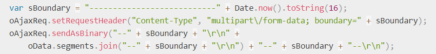

HTTP 方法
POST方法
HTTP POST 方法 发送数据给服务器，请求主体的类型由 Content-Type 首部指定。
POST方法是非幂等的方法，因为这个请求可能会创建新的资源或/和修改现有资源。
- POST 请求不会被缓存
- POST 请求不会保留在浏览器历史记录中
- POST 不能被收藏为书签
- POST 请求对数据长度没有要求
1、请求数据
服务端通常是根据请求头（headers）中的 Content-Type 字段来获知请求中的消息主体是用何种方式编码，再对主体进行解析。所以说到 POST 提交数据方案，包含了 Content-Type 和消息主体编码方式两部分。
Content-Type
- application/x-www-form-urlencoded（标准）
- multipart/form-data（标准）
- application/json（非标准）
- text/xml
- text/plain
application/x-www-form-urlencoded
请求头中的Content-Type设置为application/x-www-form-urlencoded；提交的数据被编码成以 '&' 分隔的键-值对，同时以 '=' 分隔键和值。非字母或数字的字符会被 percent-encoding：这也就是为什么这种类型不支持二进制数据（应使用 multipart/form-data 代替）。
其实就是和 GET 请求的数据提交格式是一样的，只不过位置从 Request URL 上换到了 Request Body 里。
POST /test.html HTTP/1.1
Host: foo.com
Content-Type: application/x-www-form-urlencoded
Content-Length: 13
say=Hi&to=Mom
适用场景：数据量不大、数据层级不深的情况。
multipart/form-data
当你需要提交文件、非 ASCII 码的数据或者是二进制流数据，则使用这种提交方式。
请求头中的Content-Type 是multipart/form-data; 并且会随机生成一个boundary, 用于区分请求body中的各个数据; 每个数据以 --boundary 开始, 紧接着换行,下面是内容描述信息, 接着换2行, 接着是数据; 然后以 --boundary-- 结尾, 最后换行。
POST http://www.example.com HTTP/1.1
Content-Type:multipart/form-data; boundary=----WebKitFormBoundaryPAlLG7hJKNYc4ft3
------WebKitFormBoundaryrGKCBY7qhFd3TrwA
Content-Disposition: form-data; name="text"
demo
------WebKitFormBoundaryPAlLG7hJKNYc4ft3
Content-Disposition: form-data; name="file"; filename="demo.png"
Content-Type: image/png
------WebKitFormBoundaryPAlLG7hJKNYc4ft3--
适用场景：文件上传。
application/json
POST http://www.example.com HTTP/1.1
Content-Type: application/json;charset=utf-8
{"name":"xfly","age": 24, "hobby":["x","xx","xxx"]}
适用场景：数据结构较复杂，层级较深的情况。
text/plain
POST http://www.example.com HTTP/1.1
Content-Type: text/plain
foo=bar
baz=The first line.
The second line.
2、请求方式
- html
<form>表单 - fetch
- xhr(axios)
- SSE
- WebSocket
html <form> 表单
html \
- 使用 POST 方法并设置 enctype 属性为 application/x-www-form-urlencoded（默认）。
- 使用 POST 方法并设置 enctype 属性为 multipart/form-data FormData
- 使用 POST 方法并设置 enctype 属性为 text/plain
- 使用 GET 方法（这种情况下 enctype 属性会被忽略）
xhr(axios)
使用 application/x-www-form-urlencoded
方法1：使用 URLSearchParams 实例作为 body（xhr.send(body)）
方法2：设置 Content-Type Header 为 application/x-www-form-urlencode
然后自己编码（如果直接使用字符串作为 body 则实际会被浏览器解析 Content-Type 为 text/plain）
import axios from 'axios'; const queryString = require('qs'); axios.post( url, queryString.stringify(data), { headers: { 'Content-Type': 'application/x-www-form-urlencoded' }}, );multipart/form-data
方法1：不要设置 Content-Type，传输 data 为 FormData 的实例，浏览器会自动处理
import axios from 'axios' let data = new FormData(); data.append(key, value); axios.post(url, data);方法2：手动设置 Content-Type（还需要设置 boundary，比较麻烦） 需要注意：如果要设置 requestHeader('Content-Type', 'multipart\/form-data')是不够的，还需要加上 boundary

application/json（非标准）
设置 Content-Type 为 'application/json;charset=utf-8'，JSON 序列化处理 data： JSON.stringify(data)
import axios from 'axios' axios.post(url, data);application/json-seq rfc7464（非标准，json 序列）
分隔符（标准：RS = %x1E）
OPTIONS 请求
概念
HTTP 的 OPTIONS 方法 用于获取目的资源所支持的通信选项。客户端可以对特定的 URL 使用 OPTIONS 方法，也可以对整站（通过将 URL 设置为“*”）使用该方法。
简单来说，就是可以用 options 请求去嗅探某个请求在对应的服务器中都支持哪种请求方法。
应用
在前端中我们一般不会主动发起这个请求，但是往往你可以看到浏览器中相同的请求发起了 2 次。
其实，这是因为在跨域的情况下，在浏览器发起"复杂请求"时主动发起的。跨域共享标准规范要求，对那些可能对服务器数据产生副作用的 HTTP 请求方法（特别是 GET 以外的 HTTP 请求，或者搭配某些 MIME 类型的 POST 请求），浏览器必须首先使用 OPTIONS 方法发起一个预检请求（preflight request），从而获知服务端是否允许该跨域请求。服务器确认允许之后，才发起实际的 HTTP 请求。
简单请求与复杂请求
某些请求不会触发 CORS 预检请求，这样的请求一般称为"简单请求",而会触发预检的请求则称为"复杂请求"。
简单请求
- 请求方法为
GET、HEAD、POST时发的请求 - 人为设置了规范集合之内的首部字段，如
Accept/Accept-Language/Content-Language/Content-Type/DPR/Downlink/Save-Data/Viewport-Width/Width Content-Type的值仅限于下列三者之一,即application/x-www-form-urlencoded、multipart/form-data、text/plain- 请求中的任意 XMLHttpRequestUpload 对象均没有注册任何事件监听器；
- 请求中没有使用 ReadableStream 对象。
复杂请求
- 使用了下面任一 HTTP 方法，PUT/DELETE/CONNECT/OPTIONS/TRACE/PATCH
- 人为设置了规范集合之外首部字段，即简单请求外的字段
- Content-Type 的值不属于下列之一，即
application/x-www-form-urlencoded、multipart/form-data、text/plain
options 关键的请求头字段
request header 的关键字段
| 关键字段 | 作用 |
|---|---|
| Access-Control-Request-Method | 告知服务器，实际请求将使用 POST 方法 |
| Access-Control-Request-Headers | 告知服务器，实际请求将携带的自定义请求首部字段 |
如：
Access-Control-Request-Method: POSTA
ccess-Control-Request-Headers: X-PINGOTHER, Content-Type
response header 的关键字段
| 关键字段 | 作用 |
|---|---|
| Access-Control-Allow-Methods | 表明服务器允许客户端使用什么方法发起请求 |
| Access-Control-Allow-Origin | 允许跨域请求的域名，如果要允许所有域名则设置为 * |
| Access-Control-Allow-Headers | 将实际请求所携带的首部字段告诉服务器 |
| Access-Control-Max-Age | 指定了预检请求的结果能够被缓存多久 |
Options 请求优化
当我们发起跨域请求时，如果是简单请求，那么我们只会发出一次请求，但是如果是复杂请求则先发出 options 请求，用于确认目标资源是否支持跨域，然后浏览器会根据服务端响应的 header 自动处理剩余的请求，如果响应支持跨域，则继续发出正常请求，如果不支持，则在控制台显示错误。
由此可见，当触发预检时，跨域请求便会发送 2 次请求，既增加了请求数，也延迟了请求真正发起的时间，严重影响性能。
所以，我们可以优化 Options 请求，主要有 2 种方法。
- 转为简单请求，如用 JSONP 做跨域请求
- 对 options 请求进行缓存，服务器端设置
Access-Control-Max-Age字段，那么当第一次请求该 URL 时会发出 OPTIONS 请求，浏览器会根据返回的 Access-Control-Max-Age 字段缓存该请求的 OPTIONS 预检请求的响应结果（具体缓存时间还取决于浏览器的支持的默认最大值，取两者最小值，一般为 10 分钟）。在缓存有效期内，该资源的请求（URL 和 header 字段都相同的情况下）不会再触发预检。（chrome 打开控制台可以看到，当服务器响应 Access-Control-Max-Age 时只有第一次请求会有预检，后面不会了。注意要开启缓存，去掉 disable cache 勾选。）
总结
options 请求就是预检请求，可用于检测服务器允许的 http 方法。当发起跨域请求时，由于安全原因，触发一定条件时浏览器会在正式请求之前自动先发起 OPTIONS 请求，即 CORS 预检请求，服务器若接受该跨域请求，浏览器才继续发起正式请求。
参考链接
Why I still use XHR instead of the Fetch API
XMLHttpRequest vs the Fetch API: What’s Best for Ajax in 2019?